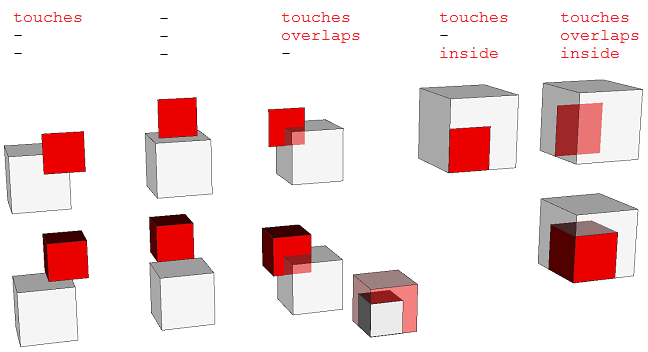
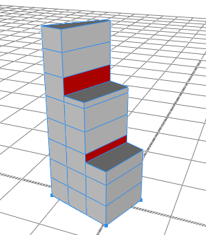
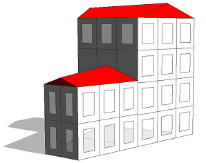
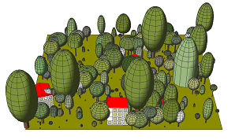
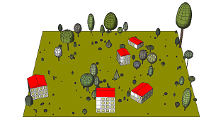
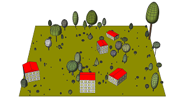
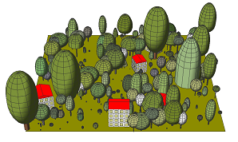
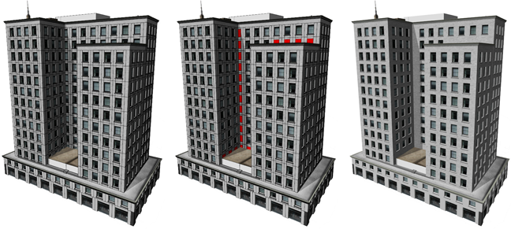

inside, overlaps, touches occlusion queries
Syntax
Parameters
target selector
| intra | Checks against occluder shapes in the same shape tree, that is, from the same initial shape. |
| inter | Checks against occluder shapes in other shape trees, that is, generated by other initial shapes in the neighborhood. |
| all | Default. Checks both intra and inter. |
label string Given a label identifier, the occlusion query is performed only on occluder shapes that match the requested label. An empty label behaves as an unlabeled occlusion query.
Returns
Returns true if the geometry of the current shape lies fully inside, overlaps, or touches the closed geometry of another shape, respectively. Otherwise false is returned.
Description
An occlusion query tests for intersections between shapes. Three boolean functions are available to examine the spatial context of the geometry of the current shape:
- inside returns true if the geometry of the current shape lies completely inside, or completely on the surface of, one of the closed geometries specified by target and label.
- overlaps returns true if the geometry of the current shape lies partly or completely inside one of the closed geometries specified by target and label, or vice versa.
- touches returns true if the geometry of the current shape overlaps or has planar contact with one of the closed geometries specified by target and label.

Unlabeled occlusion queries
If no label is given or the label is empty, the geometry of the current shape is tested against a practical selection of closed occluder geometries that are automatically generated with the ruleset:
- Leaf shapes.
- Shapes on which a component split or offset has been applied. These operations typically represent the transition from mass to surface and are often applied on simple geometries that can be tested efficiently against occlusion.
- Any labeled occluder shape.
Intra occlusion
Intra occlusion queries are only performed against geometries that are neither a parent or ancestor nor a child or descendant of the query shape, since those would most likely occlude the current shape due to the top-down grammar modeling approach.
Related
Examples
Intra occlusion

Init --> extrude(15)
split(x) { ~5 : Step }*
Step --> s('1, '0.7 * (split.index + 1), '1)
comp(f) { side : Facade | top : X. }
Facade --> split(y) { 4 : Tile }*
Tile --> case touches(intra) : color(1,0,0) X.
else : X.
This example demonstrates the result of the touches occlusion query on shapes of one shape tree, using intra occlusion. Since no label is given, the query tests against automatically generated occluder shapes: the closed geometries on which the component split is applied. Each occlusion query ignores predecessor occluder shapes, namely the component split volume a tile originates from. Leaf shapes constructed in the component split and in the conditional false case are not considered because they do not form a closed geometry.
Inter occlusion

House --> extrude(5+rand(20))
comp(f) { side : Facade | top : Roof }
Roof --> roofGable(20) color(1,0,0)
Facade --> split(y) { ~5 : split(x) { ~5 : Tile }* }*
Tile --> case inside(inter) : NIL
case touches(inter) : Wall.
else : setback(1) { all : Wall. | remainder : NIL }
In this example the House rule is applied to two neighboring initial shapes, using inter occlusion. Closed occluder shapes are automatically created: blocks from the component split and roofs from leaf shapes. Further leaf shapes are not considered as they do not form a closed surface. The inside query prevents the insertion of tiles that are not visible because they are occluded by neighboring blocks or roofs. The touches query prevents the creation of windows that would occlude neighboring blocks or roofs and inserts a wall instead.
Labels

Field --> Ground
scatter(surface, rand(500), uniform) { Place }
Ground --> color(0,0.5,0)
Place --> 1% : PlaceHouse else : PlaceRandomTree
PlaceHouse --> r(0,rand(180),0)
primitiveQuad(10+rand(10), 10+rand(10))
House
PlaceTree --> i(fileRandom("/assets/*.obj"))
Tile --> case inside(intra) : NIL
case touches(intra) : Wall.
else : setback(1) { all : Wall. | remainder : NIL }
In this example the Field rule is applied to one rectangular initial shape, using intra occlusion. Besides houses, random closed tree assets are scattered on the shape. Additional occluder shapes are automatically created for each tree asset as leaf shapes. The target selector in the house tile rule can be changed to intra.

PlaceTree --> i(fileRandom("/assets/*.obj"))
CheckOverlap
CheckOverlap --> case overlaps(intra) : NIL
else : Tree.
Here overlaps is used to avoid overlapping tree assets. Note how all mutual overlapping trees are removed, although removing only a subset might already be enough. Also note that some windows do not appear because they touch occluder shapes generated by the inserted tree assets. This shows how occlusion queries test against occluder shapes created in the conditional false case which inserts all tree assets regardless of occlusion.

House --> extrude(5+rand(20))
label("block")
comp(f) { side : Facade | top : Roof }
Tile --> case inside(all, "block") : NIL
case touches(all, "block") : Wall.
else : setback(1) { all : Wall. | remainder : Window }
In this example the house blocks are labeled "block" using the label operation. This label is used in the occlusion queries in the Tile rule. Windows are then tested only against occluder shapes that match the requested label and not against the automatically generated occluder shapes of the tree assets.

CheckOverlap --> case overlaps(intra, "block") : NIL
else : Tree.
The label can also be used in the CheckOverlap rule of the trees. As a consequence, the tree assets are checked against the house blocks but not against each other.
Concrete example
The picture below shows a building model. First the rule generates a U-shaped mass model using the subdivision split operation. As a consequence, the geometries of the side wings touch the geometry of the main block and unrealistically intersected windows are generated.

The rule which constructs the windows looks like this:
WindowOpening --> Sill s('1,'1,windowSetback) t(0,0,'-1) [ i(openbox) Wall ] Window
The rule first invokes the generation of a window sill, then sets the size of the scope to the depth of the window setback and translates the scope accordingly. Afterwards the openbox asset is inserted to model the wall on the side of the window opening. Finally the actual window generation is invoked.
To make this rule react to occlusions, add a touches condition:
WindowOpening -->
case touches(intra): Wall
else: Sill s('1,'1,windowSetback) t(0,0,'-1) [ i(openbox) Wall ] Window
Now, if the geometry of the WindowOpening shape, which is a rectangular polygon generated by typical facade split rules, touches another shape's geometry, the rule invokes Wall and does not create a window. Otherwise the rule is applied as before.